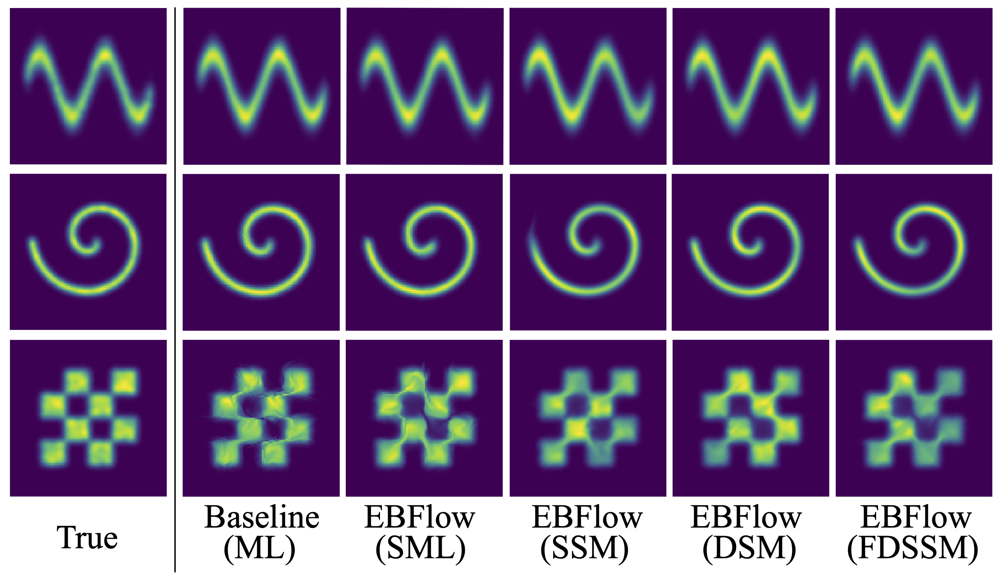
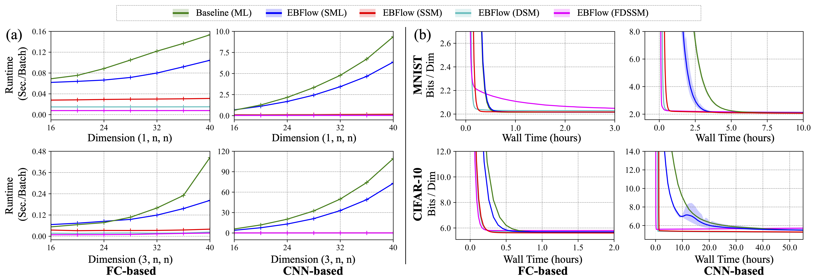
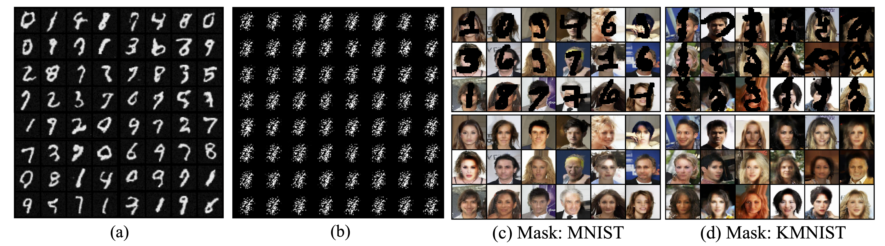

This blog post offers an introduction to our proposed EBFlow modeling method. We begin with an overview of flow-based and energy-based models. Then, we explore the connections between these models by introducing EBFlow. Next, we present experimental results to demonstrate the effectiveness of the proposed method. Finally, we discuss several implications of the EBFlow formula. If you have any questions, please feel free to email Chen-Hao Chao. If you find this information useful, please consider sharing it with your friends.
The following paragraphs offer a review of flow-based and energy-based models and their optimization methods from a computational perspective.
Parameter estimation for probability density functions (pdf) has been a major interest in the research fields of machine learning and statistics. Given a $D$-dimensional random data vector $\mathbf{x}\in \mathbb{R}^D$, the goal of such a task is to estimate the true pdf $p_{\mathbf{x}}(\cdot)$ of $\mathbf{x}$ with a function $p(\cdot\,;\theta)$ parameterized by $\theta$. In the studies of deep unsupervised learning, the flow-based modeling method is commonly-adopted for describing $p_{\mathbf{x}}(\cdot)$ due to its expressiveness and broad applicability in generative tasks [1].
▶Flow-based models describe $p_{\mathbf{x}}(\cdot)$ using a prior distribution $p_{\mathbf{u}}(\cdot)$ of a latent variable $\mathbf{u}\in \mathbb{R}^D$ and an invertible function $g=g_L \circ \cdots \circ g_1$, where $g_i:\mathbb{R}^D \to \mathbb{R}^D$, $\forall i \in \{1, \cdots ,L\}$ and is usually modeled as a neural network with $L$ layers. Based on the change of variable theorem and the distributive property of the determinant operation $\det (\cdot)$, $p(\cdot\,;\theta)$ can be described as follows:
$$p(\mathbf{x};\theta) = p_{\mathbf{u}}(g(\mathbf{x};\theta)) \left| \det( \mathbf{J}_g(\mathbf{x};\theta)) \right|=p_{\mathbf{u}}(g(\mathbf{x};\theta)) \prod_{i=1}^{L} \left| \det( \mathbf{J}_{g_i}(\mathbf{x}_{i-1};\theta)) \right|,$$
where $\mathbf{x}_i = g_i \circ \cdots \circ g_1(\mathbf{x}; \theta)$, $\mathbf{x}_0 = \mathbf{x}$, $\mathbf{J}_{g}(\mathbf{x};\theta) = \partial g(\mathbf{x};\theta)/\partial \mathbf{x}$ represents the Jacobian of $g$ with respect to $\mathbf{x}$, and $\mathbf{J}_{g_i}(\mathbf{x}_{i-1};\theta) = \partial g_i(\mathbf{x}_{i-1};\theta)/\partial \mathbf{x}_{i-1}$ represents the Jacobian of the $i$-th layer of $g$ with respect to $\mathbf{x}_{i−1}$. This work concentrates on model architectures employing both linear and non-linear transformations to construct the function $g$. Such a construction was inspired by the recent development of normalizing flows with convolution layers [2-6], fully-connected layers [7,8], and linear independent component analysis (ICA) models [8]. Let $S_l=\{i\,|\,g_i\,\text{is linear}\}$ and $S_n=\{i\,|\,g_i\,\text{is non-linear}\}$ represent the sets of indices of the linear and non-linear transformations in $g$, respectively. The pdf defined by $g$ can be further decomposed as follows:
$$p(\mathbf{x};\theta) = p_{\mathbf{u}}(g(\mathbf{x};\theta)) \prod_{i\in S_n} \left| \det( \mathbf{J}_{g_i}(\mathbf{x}_{i-1};\theta)) \right| \prod_{i\in S_l} \left| \det( \mathbf{J}_{g_i}(\theta)) \right|.$$
The input-independence of the Jacobian determinant product of $S_l$ holds since the transformations in $\{g_i, \forall i\in S_l\}$ are either first-degree or zero-degree polynomials, and thus their Jacobians are constant to $\mathbf{x}_{i-1}$. Previous implementations of such model architectures include Generative Flows (Glow) and Neural Spline Flows (NSF) models.
Given the parameterization of $p(\cdot\,;\theta)$, a commonly used approach for optimizing $\theta$ is maximum likelihood (ML) estimation, which involves minimizing the Kullback-Leibler (KL) divergence $\mathbb{D}_{KL}[p_{\mathbf{x}}(\cdot) \| p(\cdot\,;\theta)]$. The ML objective $L_{ML}(\theta)$ is derived by removing a constant term from $\mathbb{D}_{KL}[p_{\mathbf{x}}(\cdot) \| p(\cdot\,;\theta)]$, and can be expressed as follows:
$$L_{ML}(\theta)=\mathbb{E}_{p_{\mathbf{x}}(\mathbf{x})}[-\log p(\mathbf{x};\theta)].$$
The ML objective explicitly evaluates $p(\mathbf{x};\theta)$, which indicates that model architectures containing layers with dense $\mathbf{J}_{g_i}$ may encounter training inefficiency due to the $O(D^3L)$ cost of the Jacobian determinant products. Although a number of alternative methods (e.g., lower-triangular designs and the relative gradient method) can be adopted to reduce the computational cost, they either require additional constraints on the transformation or biased estimation on the gradients of the ML objective.
▶Energy-based models are formulated based on a Boltzmann distribution, which is expressed as the ratio of an unnormalized density function to an input-independent normalizing constant. Given a scalar-valued energy function $E(\cdot\,;\theta)$, the unnormalized density function is defined as $\exp (-E(\cdot\,;\theta))$, and the normalizing constant $Z(\theta)$ is defined as the integration $\int \exp (-E(\mathbf{x}';\theta)) d\mathbf{x}'$. The parameterization of $p(\cdot\,;\theta)$ is presented in the following equation:
$$p(\mathbf{x};\theta)=\exp (-E(\mathbf{x};\theta))Z^{-1}(\theta).$$
Optimizing $p(\cdot\,;\theta)$ in energy-based model through directly evaluating $L_{ML}(\theta)$ is computationally infeasible, since the computation requires explicitly calculating the intractable normalizing constant $Z(\theta)$. To address this issue, a widely-used technique is to reformulate $\nabla_{\theta} L_{ML}(\theta)$ as its sampling-based variant $\nabla_{\theta} L_{SML}(\theta)$ , which is expressed as follows:
$$L_{SML}(\theta)=\mathbb{E}_{p_{\mathbf{x}}(\mathbf{x})} [E(\mathbf{x};\theta)] − \mathbb{E}_{p(\mathbf{x};\theta')} [E(\mathbf{x};\theta)]\,\bigg|_{\theta' = \theta}.$$
Despite the fact that using $L_{SML}(\theta)$ prevents the calculation of $Z(\theta)$, sampling from $p(\cdot\,;\theta)$ typically requires running a Markov Chain Monte Carlo (MCMC) process until convergence, which can still be computationally expensive as it involves evaluating the gradients of the energy function numerous times.
Another line of researches proposed to optimize $p(\cdot\,;\theta)$ through minimizing the Fisher divergence $\mathbb{D}_{F}[p_{\mathbf{x}}(\cdot) \| p(\cdot\,;\theta)]$ using the score-matching (SM) [10] objective $L_{SM}(\theta)=\mathbb{E}_{p_{\mathbf{x}}(\mathbf{x})}[\frac{1}{2} \| \frac{\partial}{\partial \mathbf{x}} E(\mathbf{x};\theta) + Tr(\frac{\partial^2}{\partial \mathbf{x}^2} E(\mathbf{x};\theta)) \|^2]$ to avoid the explicit calculation of $Z(\theta)$ as well as the sampling process required in $L_{\text{SML}}(\theta)$. Several computationally efficient variants of $L_{SM}(\theta)$, including sliced score matching (SSM) [11], finite difference sliced score matching (FDSSM) [12], and denoising score matching (DSM) [13], have been proposed.
SSM is derived directly based on $L_{SM}(\theta)$ with an unbiased Hutchinson’s trace estimator. Given a random projection vector $\mathbf{v}\in \mathbb{R}^D$ drawn from $p_\mathbf{v}$ and satisfying $\mathbb{E}_{p_{\mathbf{v}}(\mathbf{v})}[\mathbf{v}^T \mathbf{v}] = I$, the objective function denoted as $L_{SSM}(\theta)$, is defined as follows:
$$L_{SSM}(\theta)=\mathbb{E}_{p_{\mathbf{x}}(\mathbf{x})} \left[\frac{1}{2} \left\| \frac{\partial}{\partial \mathbf{x}} E(\mathbf{x};\theta) + \mathbf{v}^T\frac{\partial^2}{\partial \mathbf{x}^2} E(\mathbf{x};\theta)\mathbf{v} \right\|^2\right].$$
FDSSM is a parallelizable variant of $L_{SSM}(\theta)$ that adopts the finite difference method to approximate the gradient operations in the objective. Given a uniformly distributed random vector $\mathbf{\varepsilon}$, it accelerates the calculation by simultaneously forward passing $E(\mathbf{x}; \theta)$, $E(\mathbf{x}+\mathbf{\varepsilon}; \theta)$, and $E(\mathbf{x}-\mathbf{\varepsilon}; \theta)$ as follows:
$$L_{FDSSM}(\theta)=2 \mathbb{E}_{p_{\mathbf{x}}(\mathbf{x})} \left[E(\mathbf{x};\theta)\right] - \mathbb{E}_{p_{\mathbf{x}}(\mathbf{x})p_{\mathbf{\xi}}(\mathbf{\varepsilon})} \left[E(\mathbf{x}+\mathbf{\varepsilon};\theta)+E(\mathbf{x}-\mathbf{\varepsilon};\theta)\right]+\frac{1}{8}\mathbb{E}_{p_{\mathbf{x}}(\mathbf{x})p_{\mathbf{\xi}}(\mathbf{\varepsilon})} \left[\left(E(\mathbf{x}+\mathbf{\varepsilon};\theta)-E(\mathbf{x}-\mathbf{\varepsilon};\theta)\right)^2\right],$$
where $p_{\mathbf{\xi}}(\mathbf{\varepsilon})=U(\mathbf{\varepsilon}\,|\, \|\mathbf{\varepsilon}\|=\mathbf{\xi})$ is a uniform distribution, and $\mathbf{\xi}$ is a hyper-parameter that usually assumes a small value.
DSM approximates the true pdf through a surrogate that is constructed using the Parzen density estimator $p_{\sigma}(\mathbf{\tilde{x}})$. The approximated target $p_{\sigma}(\mathbf{\tilde{x}}) =\int p_{\sigma}(\mathbf{\tilde{x}}|\mathbf{x})p_\mathbf{x}(\mathbf{x})d\mathbf{x}$ is defined based on an isotropic Gaussian kernel $p_{\sigma}(\mathbf{\tilde{x}}|\mathbf{x}) = N(\mathbf{\tilde{x}}|\mathbf{x}, \sigma^2 I)$ with a variance $\sigma^2$. The objective $L_{DSM}(\theta)$, which excludes the Hessian term in $L_{SSM}(\theta)$, is written as follows:
$$L_{DSM}(\theta)=\mathbb{E}_{p_{\sigma}(\mathbf{\tilde{x}}|\mathbf{x})p_\mathbf{x}(\mathbf{x})}\left[ \frac{\partial}{\partial \mathbf{\tilde{x}}} E(\mathbf{\tilde{x}};\theta) + \frac{\mathbf{x}-\mathbf{\tilde{x}}}{\sigma^2} \right].$$
Our key observation is that the parametric density function of a flow-based model can be reinterpreted as that of an energy-based model through identifying the input-independent multipliers in $p(\cdot\,;\theta)$. Specifically, $p(\cdot\,;\theta)$ can be explicitly factorized into an unnormalized density and a corresponding normalizing term as follows:
$$p(\mathbf{x};\theta) = \underbrace{p_{\mathbf{u}}(g(\mathbf{x};\theta)) \prod_{i\in S_n} \left| \det( \mathbf{J}_{g_i}(\mathbf{x}_{i-1};\theta)) \right|}_{\text{unnorm. density}} \underbrace{\prod_{i\in S_l} \left| \det( \mathbf{J}_{g_i}(\theta)) \right|}_{\text{norm. const.}} \triangleq \underbrace{\exp (-E(\mathbf{x};\theta))}_{\text{unnorm. density}} \underbrace{Z^{-1}(\theta)}_{\text{norm. const.}}.$$
The energy function $E(\mathbf{x};\theta)$ of $p(\mathbf{x};\theta)$ is represented as follows:
$$E(\mathbf{x};\theta)=-\log \left( p_{\mathbf{u}}(g(\mathbf{x};\theta)) \prod_{i\in S_n} \left| \det( \mathbf{J}_{g_i}(\mathbf{x}_{i-1};\theta)) \right| \right).$$
This formulation essentially conveys the following:
"Any flow-based model can be treated as an energy-based model with a normalizing constant $Z(\theta)=\prod_{i\in S_l} \left| \det( \mathbf{J}_{g_i}(\theta)) \right|^{-1}$ and an associated sampler $g^{-1}(\mathbf{u};\theta),\,\mathbf{u}\sim p_{\mathbf{u}}$."
▶Training Cost: From a computational perspective, this property can be utilized to isolate the Jacobian determinant product of linear transformations as a normalizing constant $Z(\theta)$. This allows the use of energy-based training methods, such as score-matching methods (i.e., SSM, FDSSM, and DSM), to optimize $p(\cdot\,;\theta)$ without directly calculating $Z(\theta)$. Under this optimization strategy, a flow-based model can be constructed using linear transformations with dense Jacobians (e.g., convolutional and fully-connected layers) while preserving optimization efficiency. As a result, modern architectures such as Glow and NSF can be optimized efficiently without constraints (e.g., masking) on their linear layers.
▶Inference Cost: Although the computational cost of evaluating the exact Jacobian determinants still requires $O(D^3L)$ time, these operations can be computed only once after training and reused for subsequent inferences, since both $Z(\theta)$ and the inverse matrices of the linear layers are constants as long as $\theta$ is fixed. In cases where $D$ is extremely large and $Z(\theta)$ cannot be explicitly calculated, stochastic estimators such as the importance sampling techniques can be used as an alternative to approximate $Z(\theta)$.
▶Asymptotic Convergence Property: Similar to maximum likelihood training, score-matching methods that minimize Fisher divergence have theoretical guarantees on their consistency [11]. This property is essential in ensuring the convergence accuracy of the parameters. Let $N$ be the number of independent and identically distributed (i.i.d.) samples drawn from $p_{\mathbf{x}}$ to approximate the expectation in the SM objective. In addition, assume that there exists a set of optimal parameters $\theta^{*}$ such that $p(\mathbf{x}; \theta^{*}) = p_{\mathbf{x}}(\mathbf{x})$. Under some regularity conditions, consistency guarantees that the parameters $\theta_N$ minimizing the SM loss converges (in probability) to its optimal value $\theta^{*}$ when $N \to \infty$, i.e., $\theta_N \to \theta^{*}$ as $N\to \infty$.
▶The Match-after-Preprocessing (MaP) Technique: As revealed in the recent studies [11, 12], training flow-based models with score-matching objectives is challenging as the training process is numerically unstable and usually exhibits significant variances. To address these issues, we propose to adopt the MaP technique. Score-matching methods rely on the score function $-\frac{\partial}{\partial \mathbf{x}}E(\mathbf{x}; \theta)$ to match $\frac{\partial}{\partial \mathbf{x}} \log p_{\mathbf{x}}(\mathbf{x})$, which requires backward propagation through each layer in $g$. This indicates that the training process could be numerically sensitive to the derivatives of $g$. For instance, logit pre-processing layers commonly used in flow-based models exhibit extremely large derivatives near 0 and 1, which might exacerbate the above issue. To address this problem, we propose to exclude the numerically sensitive layer(s) from the model and match the pdf of the pre-processed variable during training. Let $\mathbf{x}_k \triangleq g_k \circ \cdots \circ g_1 (\mathbf{x})$ be the pre-processed variable, where $k$ represents the index of the numerically sensitive layer. This method aims to optimize a parameterized pdf $p_k(\cdot\,; \theta) \triangleq p_{\mathbf{u}}(g_L \circ \cdots \circ g_{k+1}(\cdot; \theta))\prod_{i=k+1}^{L} |\det (\mathbf{J}_{g_{i}})|$ that excludes $(g_k, \cdots, g_1)$ through minimizing the Fisher divergence $\mathbb{D}_{F}[p_{\mathbf{x}_k}(\cdot)\|p_{k}(\cdot\,;\theta)]$ by considering the (local) behavior of $\mathbb{D}_{F}$, as presented in the following Proposition.
Proposition. Let $p_{\mathbf{x}_j}$ be the pdf of the latent variable of $\mathbf{x}_j \triangleq g_j \circ \cdots \circ g_1(\mathbf{x})$ indexed by $j$. In addition, let $p_j(\cdot)$ be a pdf modeled as $p_{\mathbf{u}}(g_L \circ \cdots \circ g_{j+1}(\cdot))\prod_{i=j+1}^{L} |\det (\mathbf{J}_{g_{i}})|$, where $j\in \{1,\cdots,L-1\}$. It follows that:
$$\mathbb{D}_{F}[p_{\mathbf{x}_j}\|p_{j}]=0 \Leftrightarrow \mathbb{D}_{F}[p_{\mathbf{x}}\|p_{0}]=0, \forall j\in \{1,\cdots,L-1\}.$$
Please note that MaP does not affect maximum likelihood training since $\mathbb{D}_{KL}[p_{\mathbf{x}_j}\|p_{j}]=\mathbb{D}_{KL}[p_{\mathbf{x}}\|p_{0}]$ for any $j\in \{1,\cdots,L-1\}$.
In the following experiments, the sampling process involved in the calculation of $L_{SML}(\theta)$ is implemented by $g^{-1}(\mathbf{u};\theta),\,\mathbf{u}\sim p_{\mathbf{u}}$. The transformation $g(\cdot\,;\theta)$ for each task is designed such that $S_l \neq \phi$ and $S_n \neq \phi$. For more details about the experimental setups, please refer to our paper.
▶Two-Dimensional Synthetic Examples: In this experiment, we examine the performance of EBFlow on three two-dimensional synthetic datasets. These data distributions are formed using Gaussian smoothing kernels to ensure $p_{\mathbf{x}}(\mathbf{x})$ is continuous and the true score function is well defined. The model $g(\cdot\,;\theta)$ is constructed using the Glow model architecture, which consists of actnorm layers, affine coupling layers, and fully-connected layers. The performance are evaluated in terms of the KL divergence and the Fisher divergence using i.i.d. testing sample points.
 Figure 1. The visualized density functions on the Sine, Swirl, and Checkerboard datasets. The column ‘True’ illustrates the visualization of the true density functions.
Fig. 1 demonstrates the results of the above setting. The results show that the pdf estimated by EBFlow trained with score-matching methods (i.e., SSM, FDSSM, and DSM) is on par with those trained using maximum likelihood methods (i.e., SML and ML). These results validate the efficacy of training EBFlow with score matching.
▶Efficiency Evaluation on the MNIST and CIFAR-10 Datasets: In this section, we inspect the influence of data dimension $D$ on the training efficiency of flow-based models. To provide a thorough comparison, we employ two types of model architectures and train them on two datasets with different data dimensions: the MNIST ($D = 1 \times 28 \times 28$) and CIFAR-10 ($D = 3 \times 32 \times 32$) datasets. The first model architecture is exactly the same as that adopted by [7]. It is an architecture consisting of two fully-connected layers and a smoothed leaky ReLU non-linear layer in between. The second model is a parametrically efficient variant of the first model. It replaces the fully-connected layers with convolutional layers and increases the depth of the model to six convolutional blocks. Between every two convolutional blocks, a squeeze operation is inserted to enlarge the receptive field. In the following paragraphs, we refer to these models as ‘FC-based’ and ‘CNN-based’ models, respectively.
 Figure 2. (a) A runtime comparison of calculating the gradients of different objectives for different input sizes ($D$). The input sizes are $(1, n, n)$ and $(3, n, n)$, with the x-axis in the figures representing $n$. In the format $(c, h, w)$, the first value indicates the number of channels, while the remaining values correspond to the height and width of the input data. The curves depict the evaluation results in terms of the mean of three independent runs. (b) A comparison of the training efficiency of the FC-based and CNN-based models evaluated on the validation set of MNIST and CIFAR-10. Each curve and the corresponding shaded area depict the mean and confidence interval of three independent runs.
To demonstrate the scalability of KL-divergence-based (i.e., $L_{ML}$ and $L_{SML}$) and Fisher divergence-based (i.e., $L_{SSM}$, $L_{DSM}$, and $L_{FDSSM}$) objectives used in EBFlow and the baseline method, we first present a runtime comparison for different choices of the input data size $D$. The results presented in Fig. 2 (a) reveal that Fisher-divergence-based objectives can be computed more efficiently than KL-divergence-based objectives. Moreover, the sampling-based objective $L_{SML}$ used in EBFlow, which excludes the calculation of $Z(\theta)$ in the computational graph, can be computed slightly faster than $L_{ML}$ adopted by the baseline. Fig. 2 (b) presents the trends of NLL versus training wall time when $L_{ML}$, $L_{SML}$, $L_{SSM}$, $L_{DSM}$, and $L_{FDSSM}$ are adopted as the objectives. It is observed that EBFlow trained with SSM and DSM consistently attain better NLL in the early stages of the training. The improvement is especially notable when both $D$ and $L$ are large, as revealed for the scenario of training CNN-based models on the CIFAR-10 dataset. These experimental results provide evidence to support the use of score-matching methods for optimizing EBFlow.
▶Application to Generation Tasks: The sampling process of EBFlow can be accomplished through the inverse function or an MCMC process. The former is a typical generation method adopted by flow-based models, while the latter is a more flexible sampling process that allows conditional generation without re-training the model. In the following paragraphs, we provide detailed explanations and visualized results of these tasks
 Figure 3. (Left) A qualitative comparison between (a) our model (NLL=728) and (b) the model in [12] (NLL=1,637) on the inverse generation task. (Right) A qualitative demonstration of the FC-based odel trained using $L_{DSM}$ on the data imputation task.
Inverse Generation: One characteristic of flow-based models is that $g^{-1}$ can be directly adopted as a generator In this experiment, we adopt the Glow model architecture and train it using our method with $L_{SSM}$ on the MNIST dataset. We compare our visualized results with the current best flow-based model trained using the score-matching objective [12]. The results of [12] are generated using their officially released code with their best setup (i.e., FDSSM). As presented in Fig. 3 (a) and (b), the results generated using our model demonstrate significantly better visual quality than those of [12].
MCMC Generation: In comparison to the inverse generation method, the MCMC sampling process is more suitable for conditional generation tasks such as data imputation due to its flexibility [14]. For the imputation task, a data vector $\mathbf{x}$ is separated as an observable part $\mathbf{x}_O$ and a masked part $\mathbf{x}_M$. The goal of imputation is to generate the masked part $\mathbf{x}_M$ based on the observable part $\mathbf{x}_O$. To achieve this goal, one can perform a Langevin MCMC process to update $\mathbf{x}_M$ according to the gradient of the energy function $\frac{\partial}{\partial \mathbf{x}}E(\mathbf{x}; \theta)$. Given a noise vector $\mathbf{z}$ sampled from a Gaussian distribution, a small step size $\alpha$, the process iteratively updates $\mathbf{x}_M$ based on the following equation:
$$\mathbf{x}^{(t+1)}_M=\mathbf{x}^{(t)}_M-\alpha \frac{\partial}{\partial \mathbf{x}^{(t)}_M}E(\mathbf{x}_O, \mathbf{x}^{(t)}_M; \theta)+\sqrt{2\alpha}\mathbf{z},$$
where $\mathbf{x}^{(t)}_M$ represents $\mathbf{x}_M$ at iteration $t \in \{1, \cdots , T\}$, and $T$ is the total number of iterations. Fig. 3 (c) and (d) depicts the imputation results of the FC-based model trained using $L_{DSM}$ on the CelebA dataset ($D = 3 \times 64 \times 64$). In this example, we implement the masking part $\mathbf{x}_M$ using the data from the KMNIST and MNIST datasets.
▶Linear Algebra: In this example, we show that the absolute determinant of any matrix can be estimated based on EBFlow's formulation. We begin by employing the importance sampling (IS) method to rewrite the normalizing constant $Z(\theta)$. In the IS method, a distribution $q$ that can be easily sampled from is selected. The normalizing constant $Z(\theta)$ can then be expressed by the following formula:
$$Z(\theta)=\int \exp (-E(\mathbf{x}';\theta)) d\mathbf{x}'=\int q(\mathbf{x}') \frac{\exp (-E(\mathbf{x}';\theta))}{q(\mathbf{x}')}d\mathbf{x}'=\mathbb{E}_{q(\mathbf{x}')}\left[ \frac{\exp (-E(\mathbf{x}';\theta))}{q(\mathbf{x}')} \right].$$
In EBFlow, $Z(\theta)$ corresponds to the Jacobian determinant product of the linear transformations. This suggests that the above formulation can also be re-expressed as follows:
$$\prod_{i\in S_l} \left| \det( \mathbf{J}_{g_i}(\theta)) \right|^{-1}=\mathbb{E}_{q(\mathbf{x}')}\left[ \frac{p_{\mathbf{u}}(g(\mathbf{x}';\theta)) \prod_{i\in S_n} \left| \det( \mathbf{J}_{g_i}(\mathbf{x}_{i-1}';\theta)) \right|}{q(\mathbf{x}')} \right].$$
For example, let $S_n=\phi$, $S_l$ be a set with a single element, and $W$ be the weight matrix of the linear transformation. We have:
$$\left| \det( \mathbf{W}) \right|^{-1}=\mathbb{E}_{q(\mathbf{x}')}\left[ \frac{p_{\mathbf{u}}(\mathbf{W}\mathbf{x}')}{q(\mathbf{x}')} \right]\approx \frac{1}{M}\sum_{k=1}^M \frac{p_{\mathbf{u}}(\mathbf{W}\mathbf{x}^{(k)}) }{q(\mathbf{x}^{(k)})}.$$
where $\{\mathbf{x}^{(k)}\}_{k=1}^M$ are a set of i.i.d. samples drawn from $q$. Typically, the computational cost of the determinant is $O(D^3L)$. With this formula, its value can be estimated with complexity $O(D^2M)$ and the overall computation is parallelizable.
This estimation method can be interpreted as a generalization of the stochastic estimator presented in [15], where the distributions $p_{\mathbf{u}}$ and $q$ are both modeled as isotropic Gaussian distributions, and $g$ is restricted as a linear transformation. For the further analysis of this concept, particularly in the context of determinant estimation for matrices, we refer readers to Section I of [15], where a more sophisticated approximation approach and the corresponding experimental findings are provided.
▶Reinforcement Learning: Our extension research Maximum Entropy Reinforcement Learning via Energy-Based Normalizing Flow [16] shows that EBFlow can be applied in the Soft Actor-Critic (SAC) [17] framework to model the reinforcement learning (RL) agent. In this work, we introduce a new Maximum Entropy (MaxEnt) RL framework modeled as follows:
$$\pi(\mathbf{a}|\mathbf{s})=p_{\mathbf{u}}(g_{\theta}(\mathbf{a}|\mathbf{s})) \prod_{i\in S_n} \left| \det( \mathbf{J}_{g^i_{\theta}}(\mathbf{a}^{i-1}|\mathbf{s})) \right| \prod_{i\in S_l} \left| \det( \mathbf{J}_{g^i_{\theta}}(\mathbf{s})) \right| \triangleq \exp \left(\frac{1}{\alpha} Q_{\theta}(\mathbf{s},\mathbf{a})\right) \exp \left(\frac{1}{\alpha} V_{\theta}(\mathbf{s})\right).$$
This framework integrates the policy evaluation steps and the policy improvement steps, resulting in an elegant single-objective training process. Our method enables the calculation of the soft value function used in the policy evaluation target without Monte Carlo approximation. To evaluate the performance of our method, we conducted experiments on the MuJoCo benchmark suite and a number of high-dimensional robotic tasks simulated by Omniverse Isaac Gym. The evaluation results demonstrate that our method achieves superior performance compared to widely-adopted representative baselines. We refer the readers to this project page for more details.
[1] G. Papamakarios, E. T. Nalisnick, D. J. Rezende, S. Mohamed, and B. Lakshminarayanan. Normalizing Flows for Probabilistic Modeling and Inference. Journal of Machine Learning Research (JMLR), 22:57:1–57:64, 2019.
[2] D. P. Kingma and P. Dhariwal. Glow: Generative Flow with Invertible 1x1 Convolutions. Proceedings of the International Conference on Neural Information Processing Systems (NeurIPS), 2018.
[3] E. Hoogeboom, R. van den Berg, and M. Welling. Emerging Convolutions for Generative Normalizing Flows. Proceedings of the International Conference on Machine Learning (ICML), 2019.
[4] X. Ma and E. H. Hovy. MaCow: Masked Convolutional Generative Flow. Proceedings of the International Conference on Neural Information Processing Systems (NeurIPS), 2019.
[5] Y. Lu and B. Huang. Woodbury Transformations for Deep Generative Flows. Proceedings of the International Conference on Neural Information Processing Systems (NeurIPS), 2020.
[6] C. Meng, L. Zhou, K. Choi, T. Dao, and S. Ermon. ButterflyFlow: Building Invertible Layers with Butterfly Matrices. Proceedings of the International Conference on Machine Learning (ICML), 2022.
[7] L. Gresele, G. Fissore, A. Javaloy, B. Schölkopf, and A. Hyvärinen. Relative Gradient Optimization of the Jacobian Term in Unsupervised Deep Learning. In Proceedings of the Conference on Neural Information Processing Systems (NeurIPS), 2020.
[8] T. Anderson Keller, Jorn W. T. Peters, Priyank Jaini, Emiel Hoogeboom, Patrick Forr’e, and Max Welling. Self Normalizing Flows. In Proceedings of the International Conference on Machine Learning (ICML), 2020.
[9] A. Hyvärinen and E. Oja. Independent Component Analysis: Algorithms and Applications. Neural Networks: the Official Journal of the International Neural Network Society, 13 4-5: 411-30, 2000.
[10] A. Hyvärinen. Estimation of Non-Normalized Statistical Models by Score Matching. Journal of Machine Learning Research (JMLR), 6(24):695-709, 2005.
[11] Y. Song, S. Garg, J. Shi, and S. Ermon. Sliced Score Matching: A Scalable Approach to Density and Score Estimation. In Proc. Conf. on Uncertainty in Artificial Intelligence (UAI), 2019.
[12] T. Pang, K. Xu, C. Li, Y. Song, S. Ermon, and J. Zhu. Efficient Learning of Generative Models via Finite-Difference Score Matching. In Proc. Conf. on Neural Information Processing Systems (NeurIPS), 2020.
[13] P. Vincent. A Connection between Score Matching and Denoising Autoencoders. Neural computation, 23(7):1661-1674, 2011.
[14] A. M Nguyen, J. Clune, Y. Bengio, A. Dosovitskiy, and J. Yosinski. Plug & Play Generative Networks: Conditional Iterative Generation of Images in Latent Space. In Proc. Int. Conf. on Computer Vision and Pattern Recognition (CVPR), 2016.
[15] J. Sohl-Dickstein. Two Equalities Expressing the Determinant of a Matrix in terms of Expectations over Matrix-Vector Products, 2020.
[16] C.-H. Chao, C. Feng, W.-F. Sun, C.-K. Lee, S. See, C.-Y. Lee. Maximum Entropy Reinforcement Learning via Energy-Based Normalizing Flow. In Proc. Conf. on Neural Information Processing Systems (NeurIPS), 2024.
[17] T. Haarnoja, A. Zhou, P. Abbeel, and S. Levine. Soft Actor-Critic: Off-Policy Maximum Entropy Deep Reinforcement Learning with a Stochastic Actor. In Proceedings of the International Conference on Machine Learning (ICML), 2017.
@inproceedings{chao2023ebflow,
title={{Training Energy-Based Normalizing Flow with Score-Matching Objectives}},
author={Chen-Hao Chao and Wei-Fang Sun and Yen-Chang Hsu and Zsolt Kira and Chun-Yi Lee},
year={2023},
booktitle={Proceedings of International Conference on Neural Information Processing Systems (NeurIPS)}
}